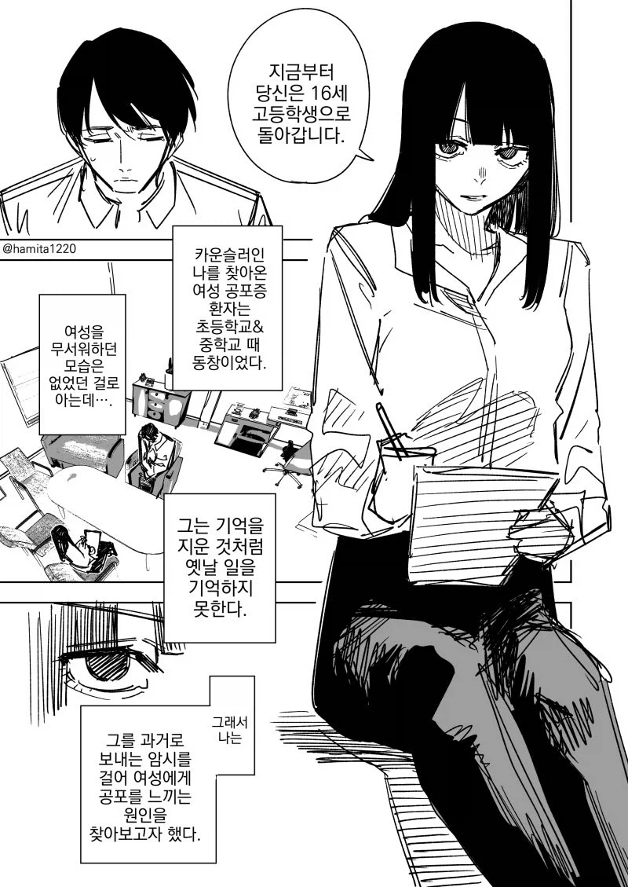
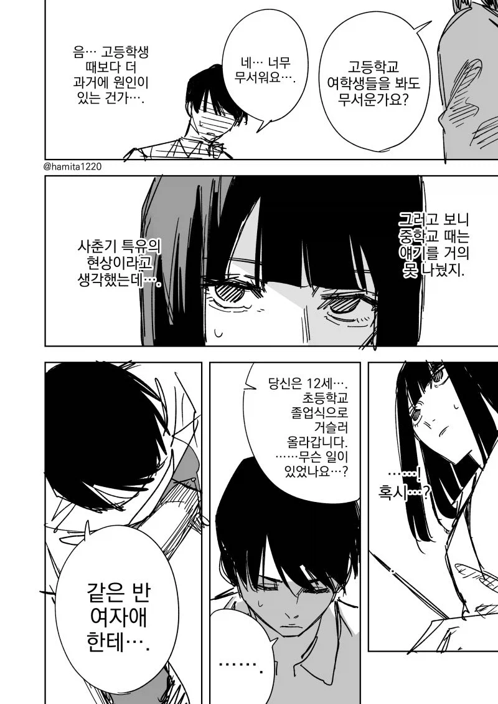
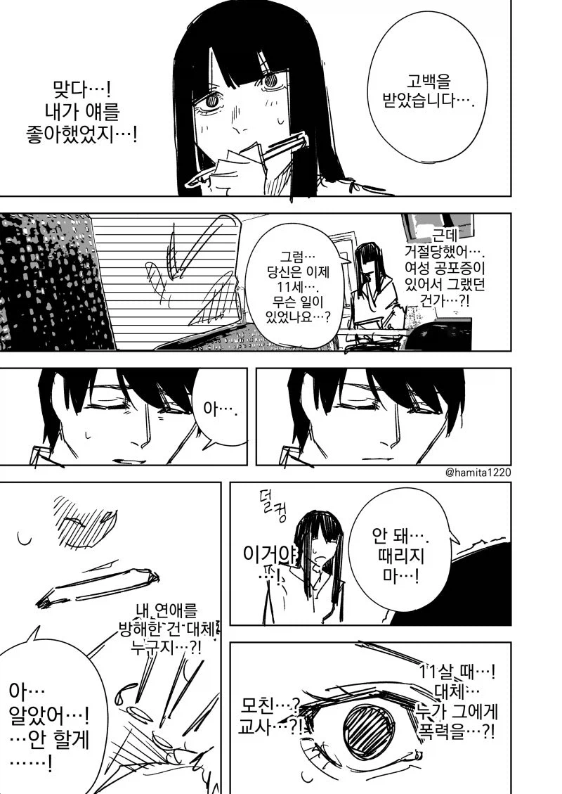
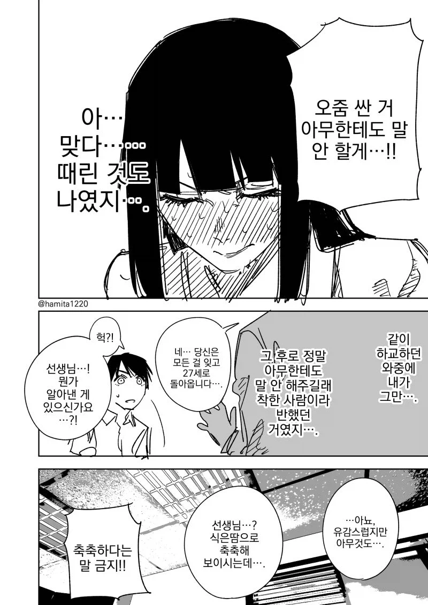

72 · 17 · 4 시간 전 · 원문




수집 당시 댓글 17개
메카다나카 · 5 시간 전
컬러브 · 5 시간 전
작가 하미타특기 - 단편만 달고, 연재 시작하면 피폐 드래프트.
↳ 답글 · 이상하면치과가야지 · 4 시간 전
↳ 답글 · 감자 · 4 시간 전
저기서 피폐드리프트 끌고가려면 저 여자가 남자 감금해서 평생에 여자라곤 나 혼자밖에 못보니 여자공포증을 겪을 필요가 없는데수웅 머 이런식으로 가는걸까
Ultragear · 4 시간 전
어흐어흐
유메노아이카찹살젖통 · 4 시간 전
여자 공포증은 걍 한번 하면 끝임 바로 졸업
↳ 답글 · 야스 · 3 시간 전
아님....
어쩔수없이쉬었음 · 4 시간 전
역시 가해자는 기억이 없구나
더나 · 4 시간 전
이 작가 고압적인 노예 재밌었는데 갑자기 피폐드리프트해서 존나 피토함
질병계 · 4 시간 전
미녀와야스 · 4 시간 전
어흐
리센느팬 · 4 시간 전
체인소맨 작가 맨날 이상한거만 그리네 ㅋㅋ
↳ 답글 · SAIKAI · 4 시간 전
체인소맨 작가 아님
↳ 답글 · 퍄퍄존스 · 1 시간 전
세탁기 로봇 메이드 작가임
빈유만세 · 4 시간 전
치료를 받아야 할 사람이 따로 있는데
김치피자하와이안탕수육 · 4 시간 전
둘이 침대에서 축축해지는 다음 컷은 와 안가져오냐
Help009 · 3 시간 전
댓글
수집 당시 댓글 17개
메카다나카 · 5 시간 전
컬러브 · 5 시간 전
작가 하미타
특기 - 단편만 달고, 연재 시작하면 피폐 드래프트.
· 이상하면치과가야지 · 4 시간 전
· 감자 · 4 시간 전
저기서 피폐드리프트 끌고가려면 저 여자가 남자 감금해서 평생에 여자라곤 나 혼자밖에 못보니 여자공포증을 겪을 필요가 없는데수웅 머 이런식으로 가는걸까
Ultragear · 4 시간 전
어흐어흐
유메노아이카찹살젖통 · 4 시간 전
여자 공포증은 걍 한번 하면 끝임 바로 졸업
· 야스 · 3 시간 전
아님....
어쩔수없이쉬었음 · 4 시간 전
역시 가해자는 기억이 없구나
더나 · 4 시간 전
이 작가 고압적인 노예 재밌었는데 갑자기 피폐드리프트해서 존나 피토함
질병계 · 4 시간 전
미녀와야스 · 4 시간 전
어흐
리센느팬 · 4 시간 전
체인소맨 작가 맨날 이상한거만 그리네 ㅋㅋ
· SAIKAI · 4 시간 전
체인소맨 작가 아님
· 퍄퍄존스 · 1 시간 전
세탁기 로봇 메이드 작가임
빈유만세 · 4 시간 전
치료를 받아야 할 사람이 따로 있는데
김치피자하와이안탕수육 · 4 시간 전
둘이 침대에서 축축해지는 다음 컷은 와 안가져오냐
Help009 · 3 시간 전